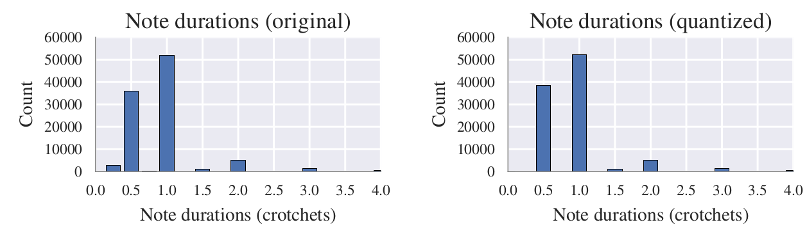
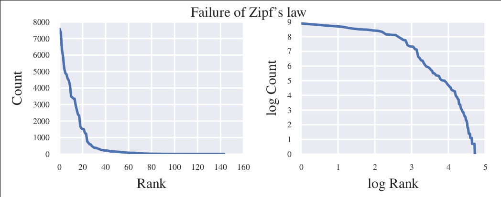

BachBot - automatic stylistic composition
Feynman Liang
Google Magenta, October 13, 2016
- Stats PhD @ Berkeley
- Engineering Manager @ Gigster
- Worked on BachBot at Cambridge University w/ MSR
Overview
- Corpus preparation
- Model analysis
- Subjective evaluation
Preparing Bach Chorale Corpus
- BWV 1-438
-
Preprocessing
- Key Normalization
- Time Quantization
-
Sequence encoding
- Handling Polyphony
- Fermatas
Transpose to Cmaj/Amin
majors = dict([("A-", 4),("A", 3),("B-", 2),("B", 1),("C", 0),("C#",-1),("D-", -1),("D", -2),("E-", -3),("E", -4),("F", -5),("F#",6),("G-", 6),("G", 5)])
minors = dict([("A-", 1),("A", 0),("B-", -1),("B", -2),("C", -3),("C#",-4),("D-", -4),("D", -5),("E-", 6),("E", 5),("F", 4),("F#",3),("G-", 3),("G", 2)])
key = score.analyze('key')
if key.mode == "major":
halfSteps = majors[key.tonic.name]
elif key.mode == "minor":
halfSteps = minors[key.tonic.name]
tScore = score.transpose(halfSteps)
for ks in tScore.flat.getKeySignatures():
ks.transpose(halfSteps, inPlace=True)
return tScore
Quantize to 1/16 note frames, add ties
encoded_score = []
for chord in (score
.quantize((FRAMES_PER_CROTCHET,))
.chordify(addPartIdAsGroup=bool(parts_to_mask))
.flat
.notesAndRests): # aggregate parts, remove markup
if chord.isRest:
encoded_score.extend((int(chord.quarterLength * FRAMES_PER_CROTCHET)) * [[]])
else:
has_fermata = (keep_fermatas) and any(map(lambda e: e.isClassOrSubclass(('Fermata',)), chord.expressions))
encoded_chord = []
for note in chord:
if parts_to_mask and note.pitch.groups[0] in parts_to_mask:
encoded_chord.append(BLANK_MASK_TXT)
else:
has_tie = note.tie is not None and note.tie.type != 'start'
encoded_chord.append((note.pitch.midi, has_tie))
encoded_score.append((has_fermata, encoded_chord))
JCB Chorales (Allan, Williams) distorts 2.85% of durations

Sequence Encoding
-
Reduce vocabulary size -- SATB ordering (e.g.
char-rnnvsword-rnn) - Learn phrase structure -- Include fermatas
Example encoding
START
(59, True)
(56, True)
(52, True)
(47, True)
|||
(59, True)
(56, True)
(52, True)
(47, True)
|||
(.)
(57, False)
(52, False)
(48, False)
(45, False)
|||
(.)
(57, True)
(52, True)
(48, True)
(45, True)
|||
END
Corpus statistics

Zipf's law failure

Best modiied Kneser-Ney language model achieves 1.991 test perplexity, LSTM achieves 1.391Model analysis
Dropout

Neuron activations

Specificity to music-theoretic concepts

Composition
Harmonization

Subjective Evaluation
Architecture
https://github.com/feynmanliang/subjective-evaluation-{client,server}
Participants

Participants

Results

Conclusion
Conclusion
- BachBot is an automatic stylistic composition model capable of learning music theory concepts without prior knowledge
- Subjective evaluation shows that generated compositions is close to indistinguishable from real Bach
-
Future work:
- Account for future in harmonization
- Investigate orderings besides SATB / other ways to reduce vocabulary
- Try other corpuses
>